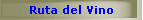
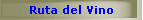
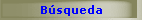
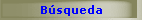

|
Listado de páginas relacionadas con
el sector vitivinícola y gastronómico.
FEV -
Federación Española del Vino.
Vitivino.com
- Portal del Sector Vitivinícola.
SOBREMESA.es
- Guía Internet de los Vinos de España.
ProductosdeNeem.com - Neem, aplicaciones medicinales y cosméticas.
Semillas, hojas, corteza y aceites del Árbol de Neem. Información
completa sobre sus propiedades y compra de productos online.
TurismoyRural.com - Turismo rural en el Salnés,
Pontevedra - Galicia. Turismo activo. Rutas de senderismo,
monumentos, playas y campo de golf.
Unións Agrarias - Delegación de Cambados: Rúa Pontevedra 15, entrechán A. C.P. 36630
Tel /Fax: 986 510 887 Email:
unions.osalnes@UPA.es
Vino.com -
Vino! is a wine portal featuring wine reviews, wineries, wine stores,
wine knowledge, wine countries and mucho mas. Subscribe to our free
newsletter!
¡Apoloybaco!
- El Jazz, los Vinos y la Literatura.
Cruceros Online - Ofertas Cruceros. Información y reservas para
su crucero por el Mediterráneo y el Caribe.
Casal
Antigo - Turismo en Casas Rurales Portugal, CASAL ANTIGO en
el parque natural de Sintra-Cascais.
http://turismogalicia.blogspot.com - Información útil sobre
Turismo en Galicia: Noticias, Lugares, Fiestas, Ferias, Turismo
rural, Playas, Alojamientos, Monumentos...
Encanto Asturiano - Hotel Rural La Quinta de Villanueva. Playa, Mar
y Montañas. Reformado. Descansa en Asturias.
Salón del Vino
- Agencia de comunicación, vinos, salón del vino, medios, eventos
Productsfromspain.net
Online Store - Wine, Brandy, Olive Oil, Champagne, Cognac, Scotch
Whisky, Rum, Tequila, Vodka, Cava, Anisette, Aguardiente de Orujo,
Licor de Hierbas, Pacharan, Sherry and Food from Spain.
Spain and
Portugal for Visitors - The thinking tourist's guide to
Spain and Portugal.
Wine
Spectator Online
Galiciaenpie.com - Simplemente lo mejor de GALICIA en la
web.
Asebor -
Asociación Empresarial de Bodegas acogidas a la denominación de
origen Ribera del Duero.
CULTURADELVINO.org - Fundación para la Cultura del Vino.
REDR.es -
Red Española de Desarrollo Rural.
ICEX.es -
Instituto Español de Comercio Exterior. Portal para la
internacionalización de la empresa española.
UEC.es - Web
de la Unión Española de Catadores.
E-NOLOGIA
- Centro de Enología y Viticultura.
| 
 
 
